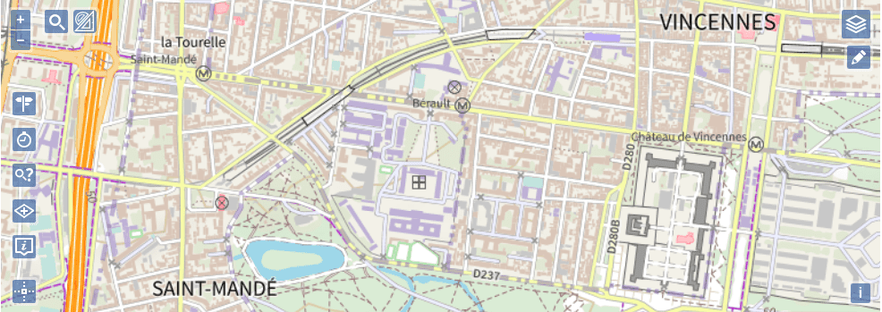

Extensions Géoplateforme



Ce projet a pour but de fournir des extensions facilitant l'accès aux ressources de la Géoplateforme pour la bibliothèque cartographique OpenLayers (versions 8 et supérieures).
Deux modes de compilation sont disponibles :
- un mode classique
- un mode DSFR reprenant l'implémentation du DSFR
AVERTISSEMENT : Le mode DSFR des extensions Géoplateforme pour OpenLayers est uniquement destiné à être utilisé pour les sites web officiels des services publics français.
Son objectif principal est de faciliter l'identification des sites gouvernementaux par les citoyens. Voir les conditions.
Ces extensions proposent des classes et widgets utilisables en complément de la bibliothèque cartographique qu'elles étendent, permettant notamment :
-
d'afficher simplement les couches WMTS et WMS délivrées par la Géoplateforme ;
-
d'intégrer un widget de gestion d'empilement des couches ;
-
d'intégrer une barre de recherche utilisant le service de géocodage IGN ;
-
de faire des calculs d'itinéraires à partir du service de la Géoplateforme ;
-
de faire des calculs d'isochrones / isodistances à partir du service de la Géoplateforme ;
-
d'afficher l'altitude en un point de la carte à l'aide du service d'altimétrie de la Géoplateforme.
-
...
OPENLAYERS
Voir le détail des fonctionnalités proposées par l'extension Géoplateforme pour OpenLayers